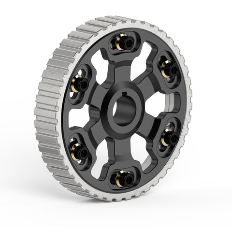
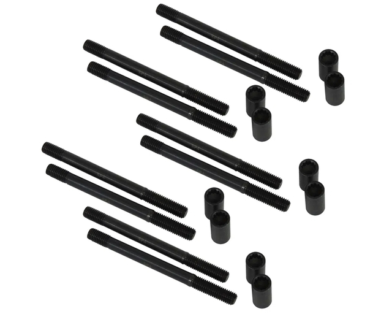
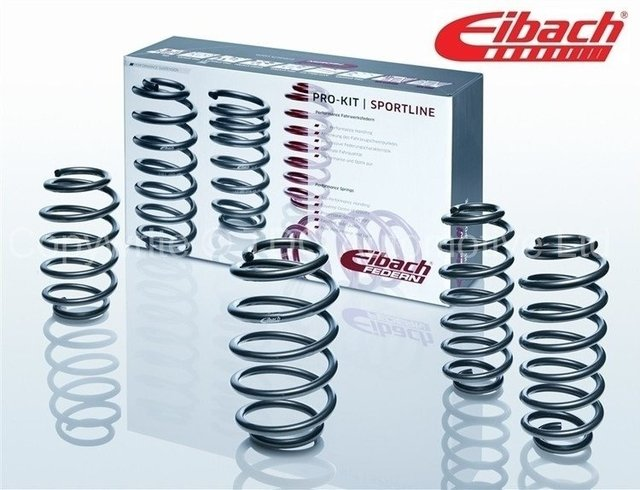

Corrector de leva VW Gol Ap 8v negro - Collino
Corrector vw motor ap 1.6 1.8 codigo de producto: caa-0201 polea dentada de acero 1045, mecanizada en cnc. Dientes tallados con creador especial reduciendo el rozamiento con la correa. Masa de aluminio mecanizada en cnc a partir de un macizo de aluminio 6061 t6. Nuestros correctores resisten altas exigencias y son de bajo peso, por lo cual son ideales para cualquier tipo de preparación. En este nuevo modelo se aumento el espesor en la rosca de los 3 tornillos de regulación, para mayor seguridad al momento de torquear. Color: Negro Codigo: CAA-0202

Esparragos tapa VW Audi Bora Golf a3 1.8T 125 mm SPA Turbo
Aplicación: Motor VW / Audi 1.8 20V (turbo y aspirado) 150hp / 180hp / 225hp (Golf / A3 / TT). Juego con 10 espárragos + 10 tuercas Dimensiones: 125 mm / rosca M10. Producido con aleación especial. Evita la deformación del bloque y la cabeza durante el montaje. Más preciso en comparación con el tornillo original. No se estira ni pierde agarre en aplicaciones de competición. Con racor allen 3/16. Optimiza el sello y evita daños al sistema de enfriamiento. Evita fugas de compresión (o presión para motores turboalimentados). Optimiza el asentamiento, proporcionando una alineación ideal entre junta / cabeza / bloque. Ideal para motores originales y potenciados Atención: utilice una llave estriada de 1/2 ". Compruebe el desgaste de la herramienta para no dañar la tuerca y, en consecuencia, comprometer el apriete. Para la instalación se requiere ajuste de 5 etapas en el siguiente orden: 2Kgfm, 4kgfm, 6kgfm, 8kgfm y 10kgfm Corroborar que el largo de los espárragos sea el correcto para una instalación sin inconvenientes Este producto no cuenta con garantia. Codigo: EXPRIS20 Codigo DL: 6001-75

Column Pod Vw Golf - Bora - Audi A3 8L
Soporte para 2 relojes de 52mm (Wideband, Presión, etc.), Compatible con VW Golf MK4, VW Bora y Audi A3 8L. Fabricados en plástico ABS de la más alta calidad, con terminación tipo Soft Touch para nuestros clientes más exigentes. Puede necesitar modificaciones nes o calentar el producto con pistola de calor para colcocar en audi 8l Los relojes mas grandes no rozan contra el volante, generando ruidos molestos o desacomodando el pod. Incluye cinta bifaz 3M para una rápida y sencilla colocación

Espirales Eibach Sportline VW Vento Audi A3 Golf GTI Leon FR
Los espirales Pro-Kit reduce el centro de gravedad de su automóvil, reduciendo la posición en cuclillas durante la aceleración, el balanceo del cuerpo en las esquinas y la excesiva inmersión en la nariz durante el frenado. Cuando se combina con ruedas y neumáticos Plus-1 o Plus-2, el Eibach Pro-Kit es el toque final a una receta ganadora para el rendimiento. Pro-Kit también reduce la holgura excesiva del guardabarros, haciendo que su auto luzca tan caliente como lo hace.